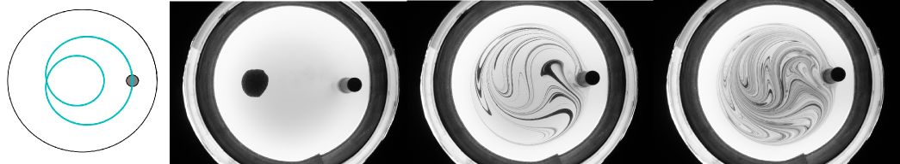
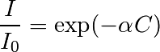
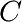
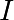
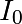

Dans cet exercice, on va traiter une série d’images tirées d’une expérience de mélange d’un fluide coloré dans un fluide transparent.
Dans cette expérience, on mélange un fluide visqueux (sirop de sucre) avec une tige se déplaçant périodiquement sur une courbe appelée épitroichoîde (une petite boucle dans une grande boucle).
Avec ce protocole, on crée ce qui s’appelle de l’advection chaotique, c’est-à-dire que les trajectoires lagrangiennes des particules fluides sont chaotiques et s’éloignent exponentiellement vite au cours du temps. Ce phénomène d’advection chaotique est bénéfique pour un bon mélange du fluide, car les points d’une tache de colorant vont s’éloigner très vite les uns des autres pour former les filaments qu’on voit sur les images, et se répartir dans une large région du fluide.
On va commencer par télécharger une série d’images du motif de colorant prises à chaque fois que la tige revient à sa position initiale : un fichier zippé avec toutes les images se trouve sur https://github.com/python-prepa/mixing-data/zipball/master
Il faut télécharger ce fichier, puis le dézipper.
On peut réaliser ces deux opération en Python, grâce à des modules de la librairie standard de Python, urllib et zipfile
>>> import urllib
>>> # le telechargement ci-dessous prend quelques minutes
>>> urllib.urlretrieve('https://github.com/python-prepa/mixing-data/zipball/master', 'data.zip')
>>> import zipfile
>>> fichier_data = zipfile.ZipFile('data.zip')
>>> fichier_data.extractall()
Pas besoin de sortir de Ipython pour réaliser ces opérations !
Seule une partie de l’image nous intéresse : celle correspondant au disque du fluide. Nous allons commencer par créer un masque correspondant aux pixels du fluide. Pour celà, le plus pratique est de partir d’une des images sans colorant contenues dans le répertoire white_images.
Ouvrir une de ces images dans un tableau NumPy white.
On va binariser l’image grâce à un seuil : chercher le seuil le plus discriminant entre le fluide et le fond grâce à skimage.filter.threshold_otsu et créer un tableau light_mask correspondant aux régions claires grâce à ce masque.
Visualiser light_mask avec skimage.io.imshow. Ce masque correspond-il exactement à ce que l’on cherche ?
Il va falloir supprimer une région claire qui n’est pas du fluide. Pour celà, on va attribuer un indice à chaque région connexe du tableau light_mask grâce à la fonction skimage.morphology.label. Appeler regions l’image d’indices. Pour connaître l’indice de la “bonne” région, plusieurs possiblilités :
on ne garde que l’indice correspondant à la plus grande région. Pour cela, il faut compter le nombre de pixels appartenant à chaque région. On peut le faire avec la fonction np.bincount.
soit on connaît les coordonnées d’un pixel de la région (i, j) qui nous intéresse, et dans ce cas-là on peut cherche le bon indice comme
>>> index = regions[i, j]
On peut ensuite faire une légère érosion de la région trouvée afin d’être sûr de ne pas avoir des pixels douteux (par exemple sur les bords du réservoir).
On veut maintenant calculer la dispersion du colorant au cours du temps, c’est-à-dire la fraction du fluide recouverte par du colorant. Il est difficile de trouver les pixels avec du colorant, car l’éclairage n’est pas homogène. On va donc au préalable diviser chaque image de mélange par une image sans colorant, ce qui va nous permettre d’obtenir une image où la valeur d’un pixel sera directement une fonction de la concentration en colorant dans ce pixel. On peut en effet utiliser la loi de Beer-Lambert

où  est la concentration en colorant,  est l’intensité de l’image de colorant et  l’intensité de l’image sans colorant.
Pour obtenir une meilleure estimation de , commencer par moyenner plusieurs images de blanc du répertoire white_images afin de réduire le bruit sur les images.
Faire ensuite une boucle sur les images pour calculer un champ de concentration avec la loi de Beer-Lambert. Déterminer grâce à l’histogramme du champ de concentration (calculé dans la région de mélange) un seuil satisfaisant pour séparer le colorant du fond. Grâce à ce seuil, déterminer, l’aire recouverte par le colorant au cours du temps.
Choisir deux sous-rectangles de la région de mélange (recouverte par du colorant). Pour chacune de ces régions, tracer l’évolution de la moyenne du champ de concentration déterminé par la loi de Beer-Lambert. Que constate-t-on ?